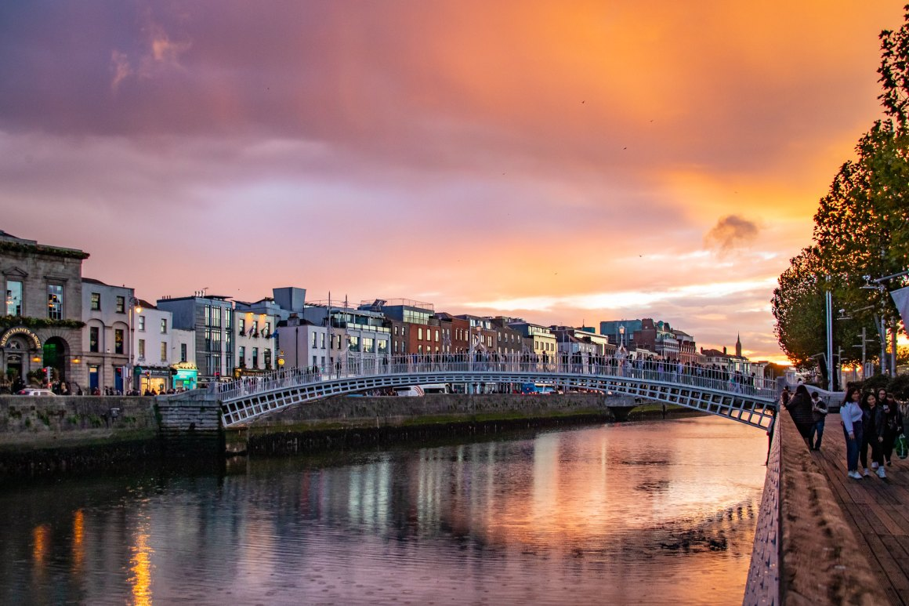

17 settembre – Dublino
✈️ Volo e trasferimenti Partenza: ore 9:50 Arrivo a Dublino: ore 11:45 Trasferimento in aeroporto: ci facciamo accompagnare, così da evitare pensieri legati al parcheggio o ai mezzi pubblici. Si consiglia di arrivare in aeroporto almeno due ore prima della partenza, quindi la partenza da casa è prevista indicativamente per le 7:30/7:45, a seconda della distanza e del traffico.🛬Arrivo a Dublino Una volta atterrati alle 11:45, il tempo previsto per uscire dall'aeroporto, recuperare eventuali bagagli e raggiungere il centro città è di circa 45-60 minuti. Entro le 13:00 circa si può essere liberi di iniziare l'esplorazione della città.
🏨 Sistemazione e check-in A seconda dell'orario di check-in dell'alloggio, si può decidere se: Dirigersi subito in struttura per lasciare i bagagli (molte strutture offrono un deposito bagagli anche prima del check-in ufficiale).

In alternativa, iniziare subito a girare per la città e tornare più tardi per il check-in.🗺️ Pomeriggio a Dublino Il primo pomeriggio può essere dedicato a una prima esplorazione leggera della città, senza un itinerario troppo rigido. Alcune idee: Passeggiata nel centro, tra Grafton Street e Temple Bar Visita al Trinity College e alla Long Room (se i tempi lo permettono) Sosta in un pub tipico per un primo assaggio dell'atmosfera irlandese
🌙 Sera e pernottamento Cena in un pub o ristorante del centro. Si dorme a Dublino. Pernottamento in alloggio da definire, preferibilmente in zona centrale per muoversi a piedi anche il giorno successivo.
📝 Note utili Controllare in anticipo gli orari dei mezzi dall'aeroporto al centro (Aircoach, Dublin Express o taxi). Tenere conto del meteo: a Dublino è frequente la pioggia, quindi portare un impermeabile o un ombrello. Per la cena, se si vuole andare in un locale molto richiesto, è consigliabile prenotare.